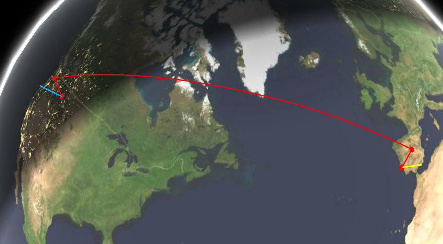
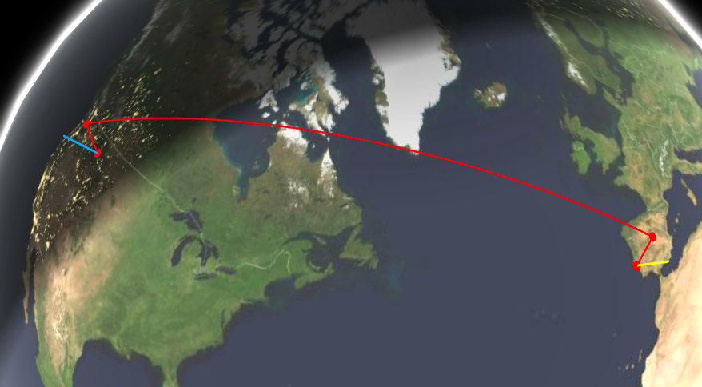
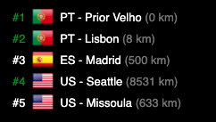
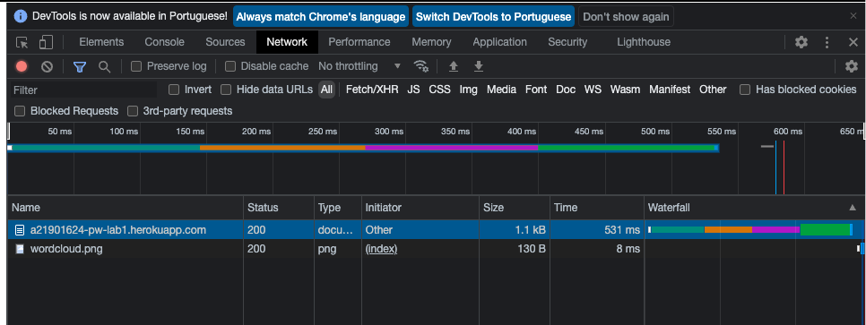

Programação Web
A Internet e a Web
A internet e a Web
Endereços de IP :

Telefone IP : 87.186.73.173

Website IP : 54.73.53.134

Percurso
 

A origem começa em Portugal, no Prior Velho. De seguida dá um salto de 8 km para Lisboa, no mesmo país.
Depois sai de Portugal vai para Espanha, dando um salto de 500 km para Madrid.
A seguir a Madrid vai para os Estados Unidos em Seatle, dando um salto de 8531km.
E Finalmente para Missoula dando outro salto de 633km no mesmo país.

Inspeção
Ficheiros descarregados

Tipo de ficheiros descarregados na sequencia de m clique num hiperlink
e o seu tempo de espera e descarga
Document
- Tempo : 364ms
- Preview : Mostra o conteúdo do website
Stylesheet
- Tempo : 1ms-12ms
- Preview : Mostra o conteúdo CSS
scripts -> javascript
- Tempo : 1ms-9ms
- Preview : Mostra o conteúdo dos scripts
PNG
- Tempo : 0ms
- Preview : Mostra a imagem
Font
- Tempo : 0ms
- Preview : Sem dados
Gif
- Tempo :
- Preview : Sem dados
XHR
- Tempo : 49ms-79ms
- Preview : Sem dados
SVG + XML
- Tempo : 0ms
- Preview : Mostra o seu conteúdo
No total são descarregados 30 ficheiros estes demoram 667ms para serem totalmente carregados
Observações
- Preview : Mostra o conteúdo dos ficheiros
- Header : Mostra o "Request" dos ficheiros, isto é onde os ficheiros são obtidos.
- Timing : Mostra o tempo para obter os informação dos ficheiros e o tempo a recarregar os ficheiros